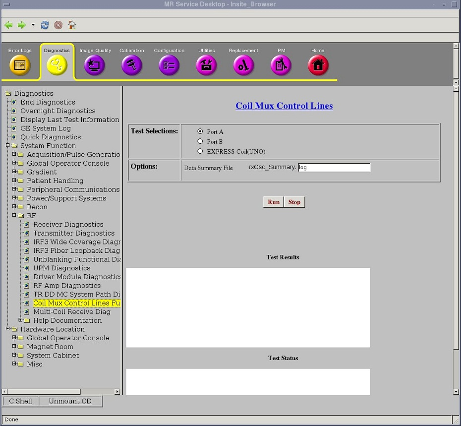
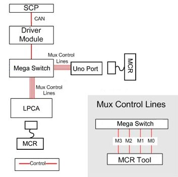
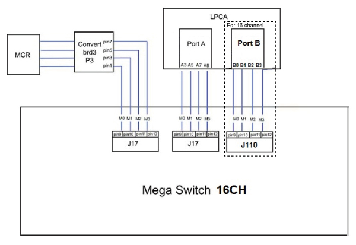

- 00000018WIA30444F20GYZ
- id_131074231.1
- Jul 5, 2019 10:46:04 PM
Coil Mux Control Lines
Diagnostic Link
Diagnostics >> System Function >> RF >> Coil Mux Control Lines
Diagnostics >> Hardware Location >> System Cabinet >> RF >> Coil Mux Control Lines

Purpose
The purpose of the Coil Mux Control Lines Functional Diagnostic is to verify that each of four mux control lines to the LPCA or Uno Port is functioning properly.
The diagnostic, which requires the MCR 3 tool, performs four tests. The MCR 3 tool provides the oscillator signal used to verify the mux control lines. However, unlike the oscillator on the MCR 2 tool, simply turning on any of the mux control lines does not turn on the MCR 3 tool’s oscillator.
Components Tested
Four (4) Mux control lines to the LPCA and Uno Port
Requirements
MCR 3 tool
Block Diagram


M0,M1,M2,M3 are 4 bit mask controls multiplexer inside phased array coil. This four lines can setting to sixteen states to control the coil scan mode.
Test Sequence
-
Insert the MCR 3 Tool into one of the ports.
-
From the diagnostic page, make the appropriate port selection (Port A, Port B or UNO Coil).
-
Click Run.
-
Follow the instructions provided by the diagnostic’s pop-up messages.
-
Repeat test for another port if needed.
Expected Results
In Coil Mux Control Lines diagnostics, UNO port diagnotiscs has the same validation process with A port. So, the following M0/M1/M2/M3 related description can be applied both for A port ,B port and Uno port.
Please see the following tests. For the more detail informations can be found in MCR log file.
Command: usr/g/service/datamine/rxOsc_Summary.log
| Test Item | Port | Validation |
| M2/M3 Open | A | deadChannel, lowSignal |
| B | ||
| UNO | ||
| M2/M3 Short | A | excessive signal errors |
| B | ||
| UNO | ||
| M0 | A | lowSignal |
| B | ||
| UNO | ||
| M1 | A | lowSignal |
| B | ||
| UNO |
Examine the results from the first test, Mux Cntrl x M2/M3 Open
If all the channels have dead channels:
-
If all the channels failed the low signal validation too, then Mux control lines 2 and/or 3 have an open circuit
-
If all the channels passed the low signal validation, then Mux control lines 0 or 1 are shorted to lines 2 or 3
Do not proceed with analyzing other test results
-
If all the channels are greater than the noise measurements, then Mux control lines 2 and 3 are ok.
Examine the results from the second test,Mux Cntrl x M2/M3 Short
-
If all channels have excessive signal errors, then Mux control lines 2 and 3 are shorted together.
Do not proceed with analyzing other test results
Examine the results from the third test, Mux Cntrl x M0
If all the channels have excessive signal errors:
-
Mux control line M0 is open, or
-
M1 is shorted to M2 and/or M3
Examine the results from the fourth test, Mux Cntrl x M1
If all the channels have excessive signal errors:
-
Mux control line M1 is open, or
-
M0 is shorted to M2 and/or M3
Expected Results
Mixed channel results are outside the scope of this diagnostic. If at any point some of the channels pass while others indicate and error, run the MCR diagnostic.